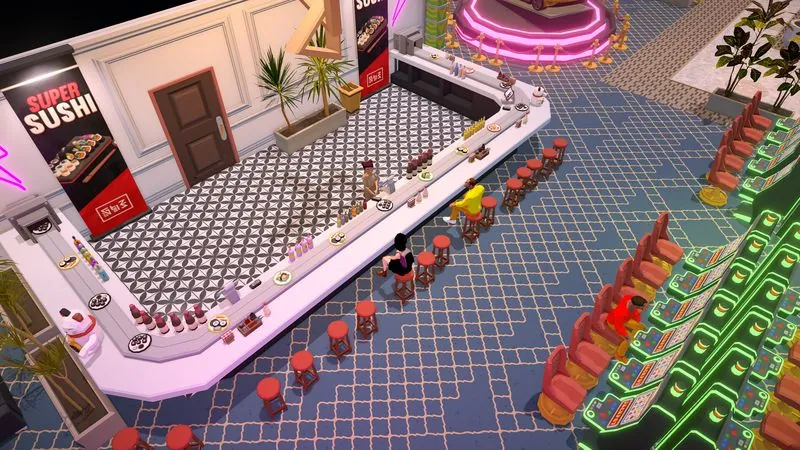
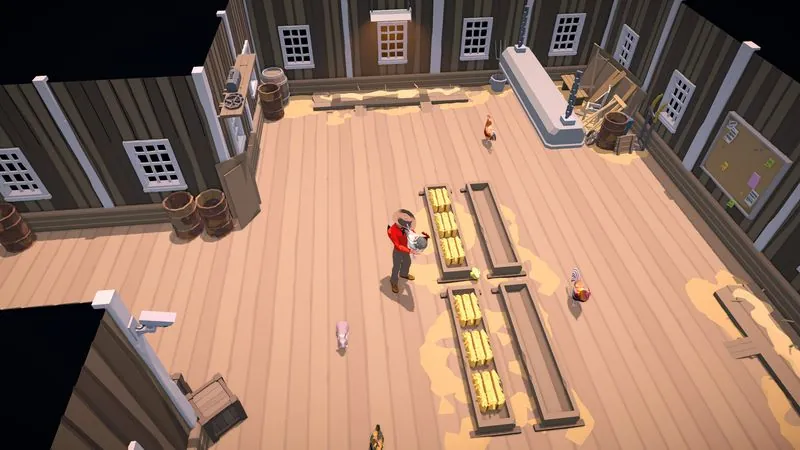

The Ranchers Multiplayer Guide: Join, Host, and Visitor Progress
Play alone, host, or visit?
Choose PLAY SOLO for your own offline session, or OPEN TO FRIENDS to welcome visitors. To visit a friend, go through the subway to their online, open ranch. Compare the two modes →

Choose who can enter your ranch
When you start or load a ranch, choose the mode for that session. These options were added in the September 8 update.
- PLAY SOLO: play without an internet connection or an active multiplayer session.
- OPEN TO FRIENDS: let friends join while you play; this needs a stable internet connection.
Visiting instead of hosting? You can use the subway from either mode to visit a friend who is online and has chosen OPEN TO FRIENDS. Visiting is still an online activity.
For handheld solo play, choose PLAY SOLO before sleep/resume so an interrupted multiplayer connection does not end the session. This is not a replacement for saving.
September 8 official update, 0.8.10.858. Choosing a game session mode does not switch the Steam client into Offline Mode.
Set expectations for visitor progress
Every player has their own ranch and world progression. Joining another ranch is a visit to the host's world, not a merge of saves. World and quest progress in that session stays with the host's save, and the host must be online.
Visitors keep money, experience, backpack items, and blueprints earned in the session, bringing them back to their own ranch.
CashIn is the remaining boundary. The FAQ does not say whether a visitor's deposit is paid to the visitor, the host, or a shared settlement. Agree with the host before selling from a shared ranch, and record the item, quantity, quality, deposit date, and next-day settlement instead of assuming the payment is shared.
September developer FAQ — retention and income categories. For the deposit steps and payment checks, see the CashIn and co-op income notes.
Co-op CashIn: who gets paid?
Short answer: the current FAQ does not specify who receives a CashIn settlement when a visitor deposits an item in the host's world. It only says that visitors keep their own money, experience, collected items and blueprints; that is not proof of CashIn ownership.
Use this low-risk isolation protocol before selling a valuable harvest. It is a test plan, not a payout result:
- Start with an empty CashIn chest and no other pending settlement; stop all other deposits, sales, quest rewards, animal output and purchases for the test window.
- Choose one basic-quality harvested crop that the current build visibly accepts for sale (for example one Red Lettuce), and record its owner and the single depositor. Do not use a mixed shipment or shared funds.
- Record host and visitor wallet balances plus every visible income line before deposit. Deposit only that one item, then take the full settlement record after the exact next-day rollover; do not compare a wallet delta alone.
- Compare both complete settlement records, all income lines and both wallet balances. If any other balance change, pending deposit or missing settlement line cannot be ruled out, mark ownership unknown and repeat with the other player depositing.
Until a current-build run satisfies those isolation conditions, keep the host's ranch budget separate from visitor earnings. Send the exact steps and full before/after settlement screenshots through the corrections page; the documented CashIn controls and next-day timing remain in the money-making guide.
Hosting & joining: setup walkthrough
The Ranchers supports 1–4 player online co-op. The official launch notes confirm multiplayer-ready quests, while the July 30 hotfix addresses a join failure affecting some friend sessions.
Before anyone hosts
- Unlock multiplayer. Complete the introductory progression before trying to host or join.
- Match region and version. Use compatible game versions and select the same The Ranchers server region.
- Sign into Steam. Offline solo works, but co-op and other online features require an active Steam connection.
- Choose which ranch to advance. Each player has a separate ranch; quests completed while visiting advance the host's world, not the visitor's ranch.
- Agree on the ranch's focus. Crops, animals or building — a short alignment before the world is created keeps the crew pulling in the same direction.
Hosting the session
- Create or load the intended ranch and choose OPEN TO FRIENDS. Stay online while hosting.
- Have the visitor use the subway to reach your ranch. Check Steam friendship and online visibility if the destination does not appear.
- Confirm all players enter the same ranch before spending shared resources or advancing quests.
- Keep the host online for the session. Visitors are helping in the host's world; check the quest owner before advancing shared objectives.
Ranch and quest progress stay with the host's save; the FAQ does not define every storage permission or who receives a CashIn payout. Agree on those details before moving shared inventory or selling.
Troubleshooting: lag, saves, permissions
Use this order before changing saves, reinstalling, or abandoning a world:
- Progression: finish the introductory progression to unlock multiplayer.
- Server region: set the host and visitor to the same The Ranchers server region.
- Version: make sure the host and visitor are using compatible game versions.
- Steam status: every player must be signed in and online; Offline Mode supports solo, not co-op.
- Host mode: confirm the destination ranch is OPEN TO FRIENDS, then retry the subway route. Use the join checklist if it still fails.
- World check: confirm the intended ranch was loaded before deciding progress is missing.
- Bug report: capture the build, session size, host steps, guest steps, and error screen for the official Steam Bug Reports forum.
Known launch issue status
The launch hotfix fixed some failed joins; the September update also adjusted timeouts to tolerate brief internet drops. That does not prove every connection problem is gone, so version and reproduction details still matter.
Role splits for 1–4 players
These splits are editorial suggestions, not game rules. The common co-op failure mode is duplication — two players watering the same field while the animals go unfed — so give each player one domain end-to-end, and rotate between in-game weeks if anyone wants a change.
Solo (1 player)
Everything is yours, so sequencing replaces splitting: crops in the morning, town and selling midday, planning and light chores in the evening. Our beginner's guide roadmap is built exactly for this.
Duo (2 players)
- Player 1 — Fields: tilling, planting, watering, harvesting, seed purchasing.
- Player 2 — Everything else: animals, selling runs, shopping, quests, building.
Trio (3 players)
- Fields lead: the entire crop pipeline.
- Barn lead: all livestock — feeding, collecting, care, housing repairs, feed stockpiling.
- Road lead: selling, buying, quests, fishing and other active income, scouting prices.
Full crew (4 players)
- Fields lead: crops, sized to the crew's combined watering capacity.
- Barn lead: livestock end-to-end, including the feed budget.
- Builder: construction, upgrades, layout, storage logistics.
- Quartermaster: selling, price tracking, money records, next season's seeds, and approval of large purchases.

Daily timetable template
This shared rhythm is an editorial starting point, not a game mechanic — adjust it to your crew's size and goals. Here is the 4-player version; smaller crews simply merge columns:
| Time of day | Fields | Barn | Builder | Quartermaster |
|---|---|---|---|---|
| Morning | Water & harvest everything | Feed & collect products | Continue current project | Check prices; plan the sales route |
| Midday | Replant; till new plots | Animal care; repair housing | Gather building materials | Selling run to town; request board |
| Evening | Everyone converges on tomorrow's bottleneck — usually unwatered fields, an unfinished building, or an unstocked feed store | |||
End each day with a short wrap-up: what is planted, what needs water, what is being built, and what goes to market. It keeps the next session's starting point clear for everyone.
Shared-resource rules
- Agree who handles purchases. Visitors keep personal money, but the FAQ does not say who receives a CashIn payout or define every storage permission. Do not treat CashIn sales as a shared wallet; assign a quartermaster for agreed ranch purchases.
- Chests have purposes, not owners. Label storage by function — seeds, harvest-to-sell, building materials, animal feed — and everyone returns items to their labeled home. Clear labels make a misplaced item easy to trace back.
- Never harvest someone else's ready crop without a word — not out of greed, but because the fields lead may be timing a sale or a quest turn-in.
- Feed stock is sacred. The barn lead sets a minimum feed reserve; dipping below it is a crew-level emergency announced immediately.
- Plan seasons together. Before day one of each season, the crew agrees the crop plan using the crop database and profit calculator. Unguided individual planting is how you end up with four seasons of the wrong crop.
- Log off deliberately. End sessions with tomorrow's plan stated out loud: what's planted, what needs water, what's being built, what's being sold.
Co-op FAQ
How many players does The Ranchers support?
1–4 players online, including the host, in the host's ranch for that session. Every player keeps a separate ranch and world progression. Solo play is fully supported — co-op is optional.
Who should host our co-op world?
Choose the ranch whose world and quest progress your group wants to advance. Every player keeps a separate ranch; visiting does not merge saves. The host must stay online for friends to visit.
Do joining players keep their own ranch?
Each player has their own ranch and world progression. Visitors keep money, experience, backpack items, and blueprints earned in the host's world; that session's quest progress stays with the host. The FAQ does not define who receives CashIn payouts.
How do we split work between 4 players?
Zones of ownership: a fields lead, a barn lead, a builder, and a quartermaster who tracks the crew's spending (whether the wallet is literally shared is still unverified in the current build). See the timetables above — and converge everyone on tomorrow's bottleneck each evening.
Is there crossplay between PC and console?
Steam lists Cross-Platform Multiplayer, but the current supported-platform combinations and account flow should be checked in the live build before planning a mixed-platform group.
What's the biggest co-op mistake to avoid?
Duplicated spending and duplicated chores. One quartermaster approves big purchases, and every domain has exactly one owner per in-game week.
What happens to the farm if I end up in jail?
Official According to the official Police District update notes, while you are in custody your friends can join your game in multiplayer, visit you, and take care of your crops and cattle — so a jail sentence does not have to mean a dead ranch.
Related guides
- Beginner's Guide — the solo fundamentals co-op builds on.
- Money-Making Guide — how co-op changes the ranch economy.
- Crop Database — plan the crew's season together.
- Profit Calculator — agree on money-makers with shared numbers.
Official sources
- Official hotfix 0.8.10.455 — fixes a friend-session join issue and confirms co-op requires Steam online.
- Official Early Access launch notes — multiplayer-ready quests.
- Official Steam store page — 1–4 player online co-op and platform features.